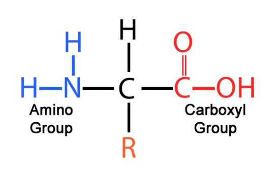

Amino acids are the fundamental building blocks of proteins, which are critical for nearly all biological processes. Proteins are composed of one or more long chains of amino acids, and their structure determines their function in the body. There are 20 standard amino acids encoded by the genetic code, each possessing unique chemical properties due to their distinct side chains (R groups).
These amino acids are categorized based on their side chains into different classes, each contributing to protein structure and function. For example, some amino acids are hydrophobic and tend to cluster together in the interior of proteins, while others are hydrophilic and interact with the aqueous environment.
The chemical structure of amino acids is crucial to their function. Each amino acid contains a central carbon atom (α-carbon) bonded to four different groups, which are:
- Amino group (-NH2): This group contains a nitrogen atom bonded to two hydrogen atoms. It acts as a base and can accept protons.
- Carboxyl group (-COOH): This group contains a carbonyl group (C=O) and a hydroxyl group (-OH). It acts as an acid and can donate protons.
- Hydrogen atom (-H): This is a simple hydrogen atom bonded to the central carbon.
- Side chain (R group): The side chain is unique to each amino acid and determines its specific properties and classification. It can vary greatly in size, shape, and chemical nature.

Learn more about amino acid structure and classifications
The image above illustrates the general structure of an amino acid. The side chain (R group) is what differentiates one amino acid from another and influences its interactions and functions within proteins.
Amino acids are classified based on the characteristics of their side chains (R groups). This classification affects how they interact with one another and with their environment. Here’s a detailed breakdown of each classification:
- Nonpolar (Hydrophobic) Amino Acids
- Definition: Amino acids with nonpolar side chains are hydrophobic, meaning they do not interact well with water. Their side chains typically consist of hydrocarbons or other nonpolar groups.
- Characteristics: These amino acids tend to cluster together in the interior of proteins, away from the aqueous environment. This clustering helps to stabilize protein structures by minimizing exposure to water.
- Polar (Hydrophilic) Amino Acids
- Definition: Amino acids with polar side chains are hydrophilic, meaning they interact favorably with water. Their side chains include functional groups like hydroxyl (-OH), amide (-CONH2), or carboxyl (-COOH), which can form hydrogen bonds with water.
- Characteristics: These amino acids are often located on the surface of proteins where they can interact with the aqueous environment or other polar molecules, aiding in protein solubility and function.
- Basic Amino Acids (Positive Charge)
- Definition: Basic amino acids have side chains with additional amino groups (-NH2) or other basic groups that can accept protons, resulting in a positively charged side chain (–NH3⁺) at physiological pH.
- Charge: The positive charge of these side chains can influence protein interactions, stability, and function, particularly in binding to negatively charged molecules or regions of proteins.
- Acidic Amino Acids (Negative Charge)
- Definition: Acidic amino acids possess side chains with additional carboxyl groups (-COOH) that can lose a proton, resulting in a negatively charged side chain (–COO⁻) at physiological pH.
- Charge: The negative charge of these side chains contributes to the overall negative charge of the protein and can play a role in enzyme activity, binding interactions, and protein stability.
 View amino acids classification diagrams
View amino acids classification diagrams
Amino acid synthesis refers to the biochemical processes that create amino acids. Amino acids can be synthesized through several pathways:
- Transamination: This process involves the transfer of an amino group from one molecule to another. It is a key step in the synthesis of non-essential amino acids from α-keto acids.
- Amidation: In this process, amino acids are synthesized by adding an amide group to a carboxyl group, converting it to a corresponding amide.
- Decarboxylation: This process removes a carboxyl group from an amino acid to form bioactive amines, such as neurotransmitters.
- De Novo Synthesis: This refers to the synthesis of amino acids from simpler precursors through complex pathways involving various enzymes and cofactors.
These processes occur in various tissues and organs, such as the liver, where amino acids are synthesized and converted to other molecules required for metabolism and function.